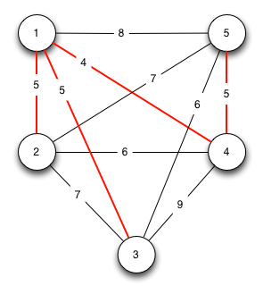

Übung1
Moritz Haslhofer (e0025125)
Approximative Algorithmen:
- Was bedeutet es, wenn ein algorithmus $A$ für ein Maximierungsproblem Gütegarantie $\epsilon$ besitzt?
- Was bedeutet es, wenn ein algorithmus $A$ für ein Minimierungsproblem Gütegarantie $\epsilon$ besitzt?
Weiters sei $c_{opt}(P)$ der optimale Wert für $P$.
- Falls $A$ ein Maximierungsproblem löst und: $\frac{c_{A}(P)}{c_{opt}(P)} \le \epsilon$ ($ \forall P \in \Pi, \exists \epsilon > 0 $) dann ist $A$ ein $\epsilon$-approximativer Algorithmus, und $\epsilon$ die Gütegarantie von $A$
- Analog dazu, wenn $A$ ein Minimierungsproblem löst und $\frac{c_{A}(P)}{c_{opt}(P)} \ge \epsilon$ ($ \forall P \in \Pi, \exists \epsilon > 0 $) dann ist $A$ ein $\epsilon$-approximativer Algorithmus, und $\epsilon$ die Gütegarantie von $A$
Das symmetrische Traveling Salesman Problem:
Angenommen die Distanzwerte zwischen den Knoten im TSP sind alle paarweise ver- schieden, ist die mittels der Christophides-Heuristik erzeugte Lösung immer eindeutig?
Begründen Sie Ihre Antwort!
- MST - ist eindeutig
- min. Perfect Match - muss nicht eindeutig sein
- MST U PF - muss nicht endeutig sein (aus 2)
- Starte von einem beliebigen Knoten $s$ und markiere ihn als besucht.
- Finde die kürzeste Kante zu einem unbesuchten, adjanzenten Knoten $v$.
- Wenn alle Knoten besucht sind, kehre zum Anfangsknoten zurück und terminiere
- Setze $v$ als aktuellen Knoten, mariere ihn als besucht und gehe zu (2). Geben Sie die Laufzeit der NN-Heuristik in $\Sigma$ - Notation an. Welche Approximationsgüte besitzt die NN-Heuristik?
- Führen Sie zuerst Zeilen- und danach Spaltenreduktion durch. Geben Sie die vollständige resultierende Matrix nach beiden Schritten an. Welche untere Schranke L für die Tourlänge können Sie aus den Reduktionen ableiten?
- Zeichnen Sie den Nulldigraphen nach den obigen Reduktionen. Welche Schlussfolge- rung können Sie aus diesem Nulldigraphen ziehen?
- Zeilenreduktion: $$ D = \begin{pmatrix} \infty & 5 & 1 & 0 \\ 1 & \infty & 0 & 2 \\ 6 & 1 & \infty & 0 \\ 3 & 0 & 1 & \infty \end{pmatrix} $$ $$L=2+3+2+2 =9$$ Spaltenreduktion: $$ D = \begin{pmatrix} \infty & 5 & 1 & 0 \\ 0 & \infty & 0 & 2 \\ 5 & 1 & \infty & 0 \\ 2 & 0 & 1 & \infty \end{pmatrix} $$ $$L=9 + 1+0+0+0 = 10$$
-
Nulldigraph:
Nulldigraph zu reduziertem $D$
- Führen Sie den Branching-Schritt aus. Wählen Sie Kante (3,4) zum Definieren der neuen Teilprobleme. Geben Sie die Matrizen der neuen Teilprobleme an.
- Führen Sie auf den Matrizen der neuen Teilprobleme wiederum Zeilen- und Spaltenreduktion durch und geben Sie die resultierenden Matrizen an. Nennen Sie die neuen unteren Schranken für die Tourlänge.
- Zeichnen Sie für beide Teilprobleme den Nulldigraphen nach den obigen Reduktionen. Welche Schlussfolgerungen können Sie aus diesen Nulldigraphen ziehen?
-
Wir schauen uns die beiden Unterprobleme:
$$ P = {(3,4)},{},{1,2,4},{1,2,3},D',10,\infty} $$
und:
$$ P = {},{(3,4)},{1,2,3,4},{1,2,3,4},D'',10,\infty} $$
an. Die Adjazentenmatrizen schauen wie folgt aus:
$$ D'= \begin{pmatrix} \infty & 5 & 1 \\ 0 & \infty & 0 \\ 2 & 0 & \infty \end{pmatrix} $$
$D'$ für erzwungene Kante (3,4)
$$ D'' = \begin{pmatrix} \infty & 5 & 1 & 0 \\ 0 & \infty & 0 & 2 \\ 5 & 1 & \infty & \infty \\ 2 & 0 & 1 & \infty \end{pmatrix} $$$D''$ für entfernte Kante (3,4)
-
$$ D'= \begin{pmatrix} \infty & 4 & 0 \\ 0 & \infty & 0 \\ 2 & 0 & \infty \end{pmatrix} $$ $$ L = 10 + 1 = 11 $$
D' reduziert
$$ D'' = \begin{pmatrix} \infty & 5 & 1 & 0 \\ 0 & \infty & 0 & 2 \\ 4 & 0 & \infty & \infty \\ 2 & 0 & 1 & \infty \end{pmatrix} $$ $$ L= 10 + 1 = 11$$D'' reduziert
-
Nulldigraph zu D'
Nulldigraph zu D''

2-opt "resistenter" Graph
Graph
- Markieren Sie jene Kanten, die einen minimalen Baum $B$ aufspannen und geben Sie die Menge $W$ der Knoten mit ungeraden Grad an.
- Geben Sie das perfekte Matching kleinsten Gewichts $M$ im von $W$ induzierten Untergraphen von G an.
- Zeichnen Sie den Graphen $G_2$ mit den Kanten $B \cup M$.
- Bestimmen Sie eine Euler-Tour $F$ im Graphen $G_2$

Minimal Spanning Tree
Perfect Match
Minimal Spanning Tree + Perfect Match
Hamilton
Eine zu kleine Tabuliste führt zu Zyklen im Algorithmus - ( der Algorithmus bleibt in einem lokalen Optimum hängen)
Eine zu grosse Tabuliste:
- verbraucht mehr Zeit bei der Prüfung, ob ein Wert in der Liste vorkommt
- beschränkt den Algorithmus zu stark, und führt ihn von einer Optimalen suche weg